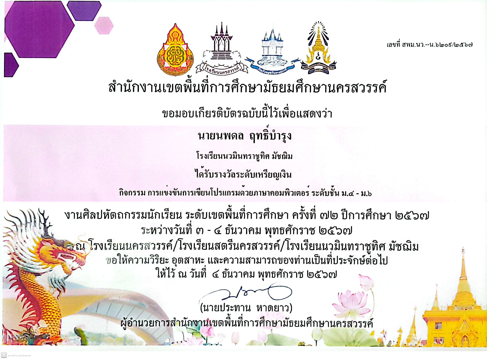
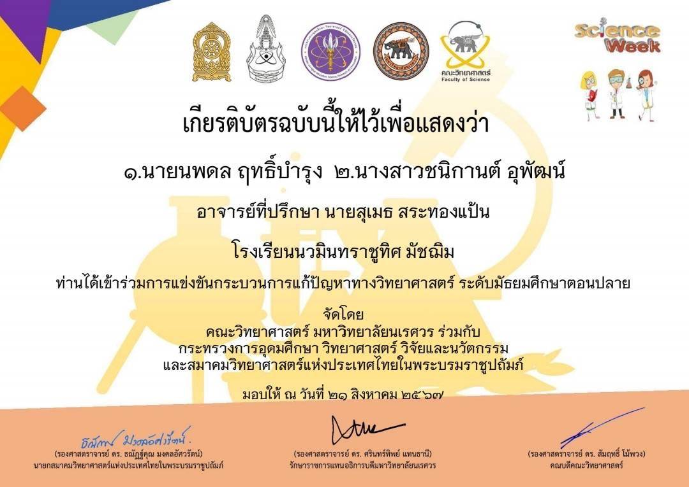
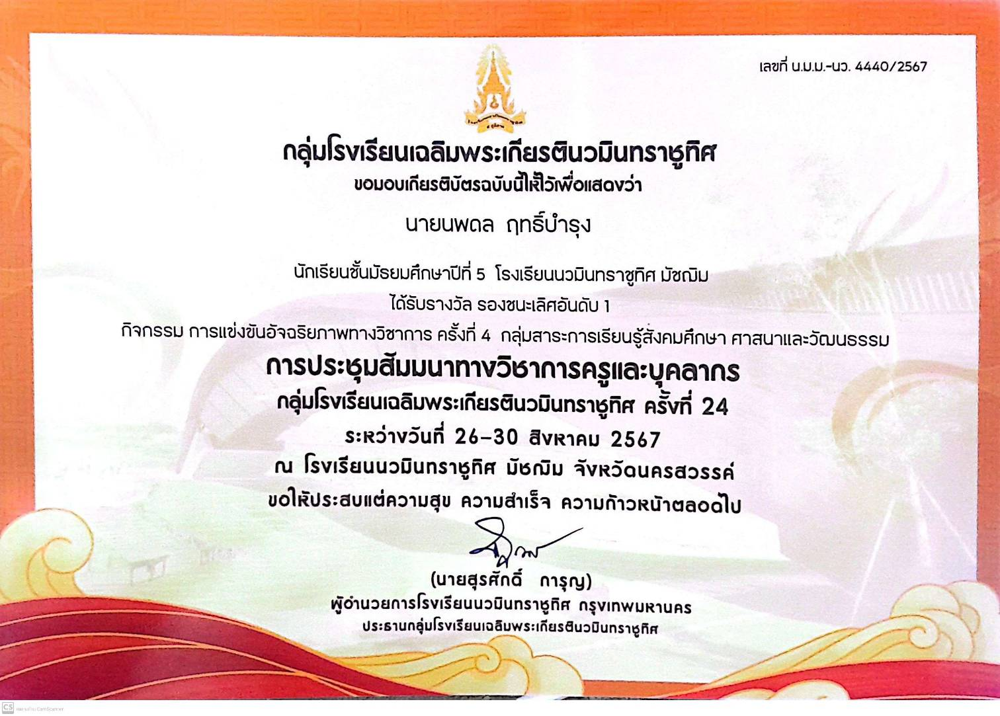
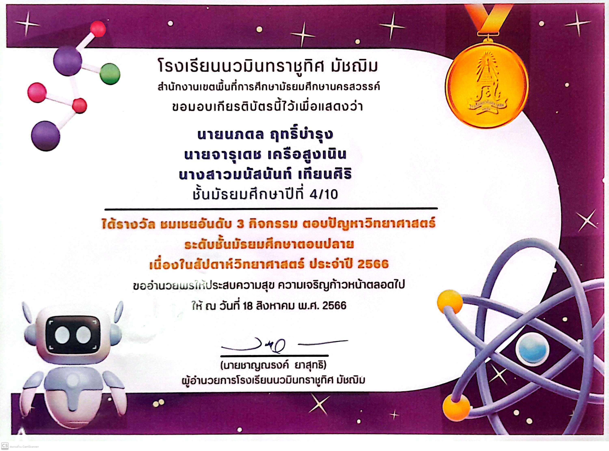
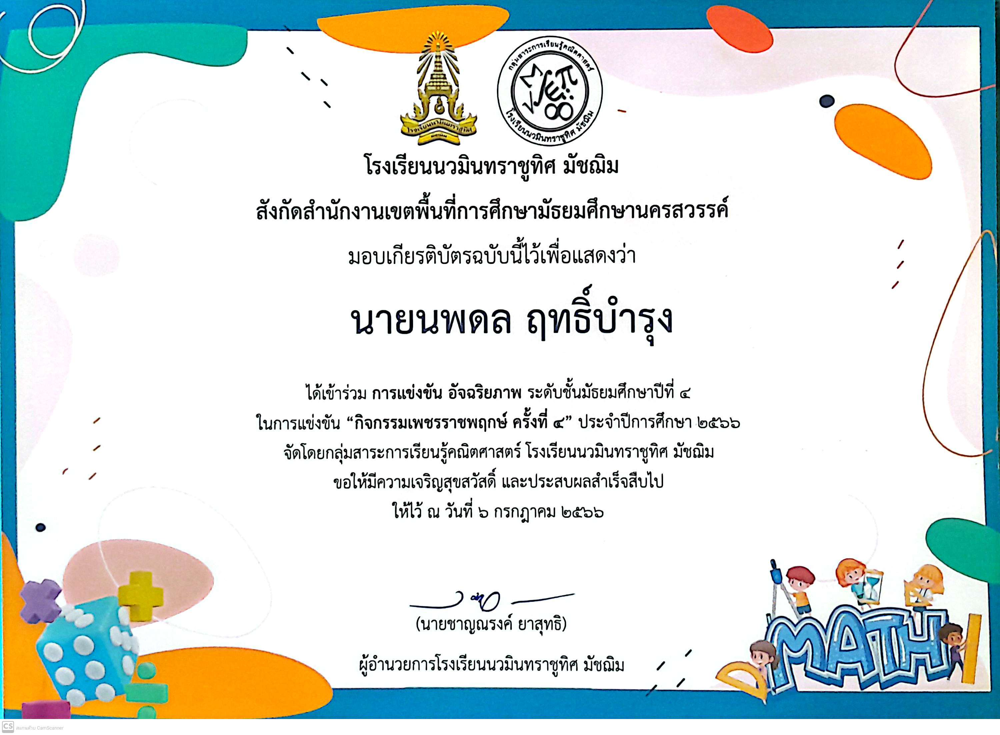
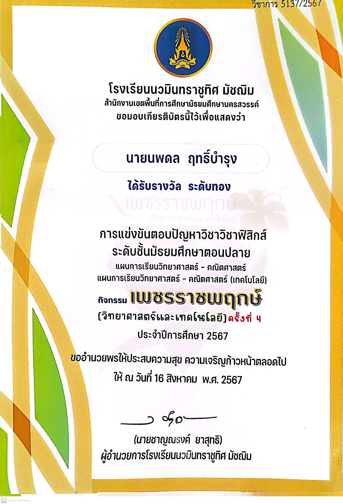
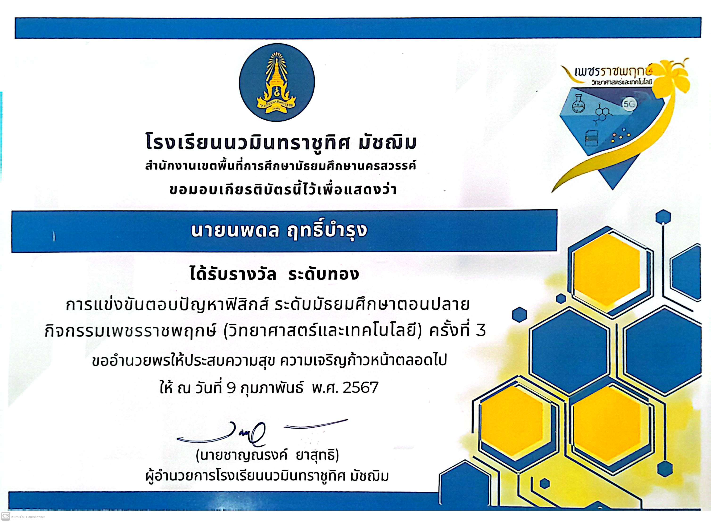

My Portfolio
HOME
Select Work
Academics
Robot
Program
Camp
Valunteer
Hobby
CONTACT
ABOUT ME
Academic

รางวัลระดับเหรียญเงิน
การเเข่งขันคอมพิวเตอร์ เป็นเเรงบันดาลใจให้ผมเริ่มฝึกเขียนโปรเเกรมครับ ทำให้ผมมีเเรงบันดาลใจอย่างมากเลยครับ รูสึกอยากพัฒนาตนเองมากๆครับ

เข้าร่วมการเเข่งขัน
การเเข่งขันตอบปัญหาทางวิทยาศาตร์ที่ม.นเรศวร ทำให้ผมได้รับประสบการณ์การเเข่งขัน กับคนที่เก่งเยอะมากๆครับ เเม้จะเป็นเเค่การเข้าร่วมเเต่ผมจะจำการเเข่งขันครั้งนี้ไม่ลืมเลยครับ

รางวัลรองชนะเลิศอันดับที่ 1
การเเข่งขันสังคม ในกิจกรรม 5 ภูมิภาคภายในเคลือโรงเรียนนวมินทร์ เป็นการเปิดโลกทางสายวิชานี้อย่างมากๆครับ ผมได้รู้ว่าประวัติศาตร์ ก็คือบทเรียนจากคนในอดีตนี่เองสามารถมาปรับใช้กับตัวผมได้เลยครับ

รางวัลชมเชยอันดับที่ 3
การเเข่งขันตอบปัญหาวิทยาศาสตร์เเบบทีม เป็นการเเข่งขันที่ตื่นเต้นมากๆครับ ได้ทั้งประสบการความสามัคคี เเละการเเก้ปัญหาเฉพาะหน้า การใช้เหตุเเละผลเพื่อให้ได้คำตอบที่ดีที่สุดภายในทีมครับ

เข้าร่วมการเเข่งขัน
เข้าร่วมการเเข่งขัน อัจฉริยภาพทางคณิตศาสตร์ครับ เป็นการเเข่งที่จุดประสงค์ของผมจริงๆคือหาเเรงบันดาลใจ เเละอยากมีประสบการณ์ในการเเข่งขันในสายวิชาคณิตศาตร์ครับ

รางวัลระดับเหรียญทอง
เป็นการเเข่งขันที่จัดขึ้นในโรงเรียนในระดับ ม.ปลายครับ ซึ่งทำให้ผมได้รู้ความสามารถของตนเองเมื่อเเข่งกันเอง ในระดับของโรงเรียนมีทั้งพี่ ม.5,ม.6 เข้าร่วมการเเข่งขัน

รางวัลระดับเหรียญทอง
เป็นการเเข่งขันที่จัดขึ้นในโรงเรียนเช่นกันครับในระดับ ม.ปลายครับ ซึ่งทำให้ผมได้รู้ความสามารถของตนเองเมื่อเเข่งกันเอง ในระดับของโรงเรียนมีทั้งพี่ ม.5,ม.6 เข้าร่วมการเเข่งขัน
รางวัลชนะเลิศอันดับที่ 1
การเเข่งขันวิชาสังคม ภายในเคลือโรงเรียนนวมินทร์ ทำให้ผมได้รับประสบการณืที่ไม่เคยคิดเลยครับ ได้เข้าใจในตัววิชานี้จริงๆครับ ว่าวิชาสังคมไม่ได้เป็นการเรียนเพื่อให้เรารู้เกี่ยวกับประวัติศาสตร์หรือต้องการให้เราศรัทธาบุคคลใดบุคคลหนึ่ง เเต่เป็นการเรียนรู้ข้อผิดพลาดหรือข้อดีของคนคนนั้น